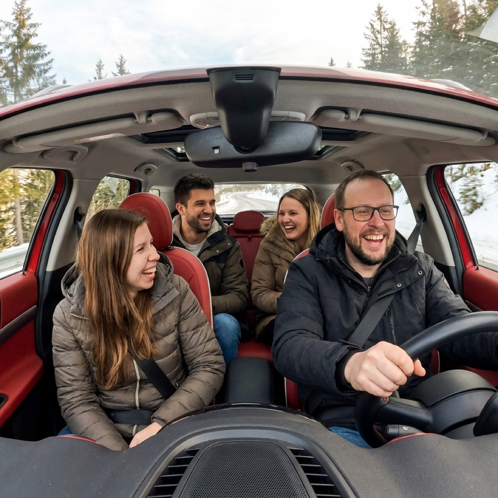

Nasz wóz / Our ride
Red MINI Countryman S - dwa czarne paski na masce / two black stripes on the hood

Trasa / Route
Mateusz - Narbutta 32
Mati wychodzi z domu. Narbutta to spokojna ulica jednokierunkowa z miejscami parkingowymi po obu stronach. Podjadę pod sam budynek - jest dużo miejsca, żeby się zatrzymać przy krawężniku.
Mati exits from home. Narbutta is a calm one-way residential street with parking on both sides. I'll pull up right in front of the building - plenty of space to stop at the curb.

Magda - Metro Rondo ONZ
Magda wychodzi z metra Rondo ONZ. Wyjście blisko Dodo Pizza (al. Jana Pawła II 18). Zatrzymam się na al. Jana Pawła II po zachodniej stronie, tuż przed skrzyżowaniem z Twardą - jest tam krótki odcinek, gdzie można się zatrzymać.
Magda exits metro Rondo ONZ. Exit near Dodo Pizza (al. Jana Pawła II 18). I'll stop on al. Jana Pawła II on the west side, just before the Twarda intersection - there's a short stretch where you can pull over.
Marta - Słomińskiego 19
Marta wychodzi z kliniki. Budynek przy Słomińskiego 19 to duży biurowiec z wieloma gabinetami lekarskimi. Jest parking przed budynkiem, a od strony ul. Dzikiej jest spokojniej - można tam podjechać i stanąć.
Marta exits from the clinic. Słomińskiego 19 is a large office building with many medical practices. There's parking in front, and ul. Dzika side is calmer - you can pull up and stop there.
Na Poronin! 🎿
Wizualizacja artystyczna / artistic visualization 😄
ParkHotel Łysoń, Poronin - pokoje 130 i 139 / rooms 130 & 139